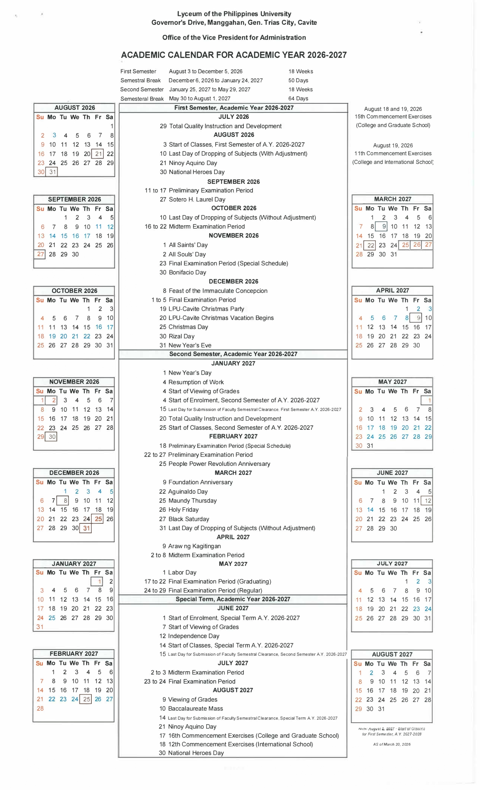

Announcements
Upcoming Events
Calendar Event

LPU Articles
Articles
- Evolving Assessment Practices in a Changing Curriculum June 26, 2026
- Bridging The Gap: Theoretical and Practical Aspect in Architecture February 23, 2026
- Best Practices in Conducting Programming Classes and Managing Students in Computer Laboratories February 23, 2026
- Living in the IT Era: The Smartphone as an Ethical Concern in the Classroom February 23, 2026
- Teaching as a Calling: 31 Years of Purpose, Passion, and Lifelong Learning February 23, 2026
- Cultivating Future Professionals Through Connection and Clarity February 23, 2026
- Sir, saan po ba natin ito gagamitin?”: Connecting Theory to Practice in Engineering February 23, 2026
- Towards Excellence in Teaching: Strategies That Foster Growth and Community January 27, 2026
- Mastering the Craft: Best Practices in Effective Teaaching January 19, 2026
- Empowering Minds, Shaping Futures: A Personal Teaching Philosophy January 19, 2026
- The HE(ART) in Teaching: Creative Pedadogies for All Disciplines Discipline-Based Approaches from Visual Arts Applied Across the Curriculum November 25, 2025
- Reflection of an Academic Achiever in Mentoring Two Backbenchers November 25, 2025
- Igniting Innovation: Creative Leadership in Education - A Reflection from the Talk of Daianne - Moreno Mempin during the Leading Beyond Limits November 25, 2025
- Being a Teacher in a Gen Z Classroom June 21, 2025
- The Enduring Bridge to Address Learning Gaps May 20, 2025
- The Gentle Guidance of Proximity: Fostering Focus Through Presence in Today's Classroom May 20, 2025
- The Pedadogical Strategies: Unveiling the Multifaceted Learners using Generative AI Tools March 14, 2025
- Effective Teaching Strategies for Business Administration Faculty February 13, 2025
- ICT's Influence on Confidence and Learning Persistence December 12, 2024
- Filipping the Classroom through Microlearning December 12, 2024
- Glocalized Learning: Cultivationg Global Citizens for a Sustainable Future October 14, 2024
- AITeach - Innovate to Educate September 20, 2024
- FOSTERING SUSTAINABLE DEVELOPMENT GOALS THROUGH PEACE EDUCATION: A PATH TOWARDS LPU CAVITE'S VISION June 25, 2024
- Best Practices in Teaching and Learning as a Lycean Educator June 19, 2024
- Tourism and Hospitality Education: Best Practices for Instruction June 19, 2024
- Would I want me as a Teacher? June 11, 2024
- Best Practices in Teaching and Learning as a Lycean Educator June 11, 2024
- ETHICAL INTEGRATION OF ARTIFICIAL INTELLIGENCE (AI) TOWARDS INNOVATION AND EXCELLENCE May 6, 2024
- Transformative Education: A Practical Odyssey in Strengthening the LPUC Educational Quality Framework April 19, 2024